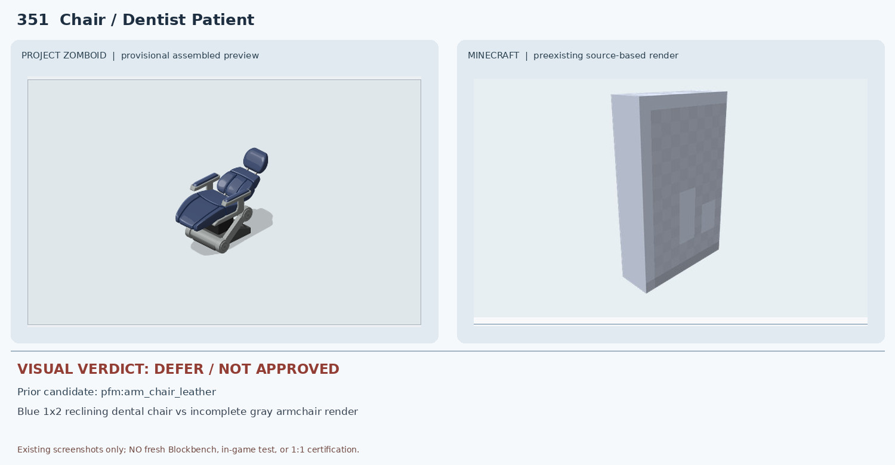
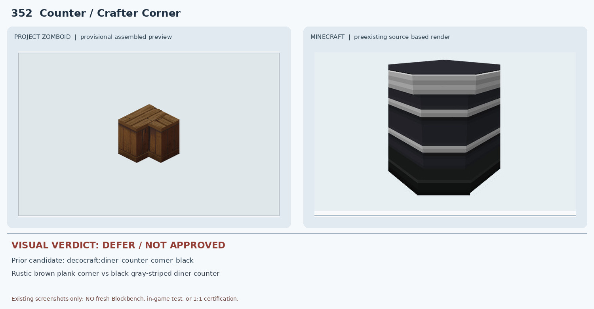
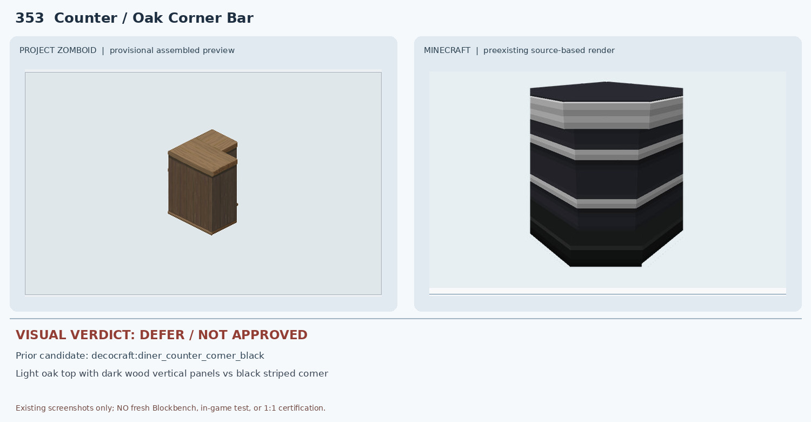
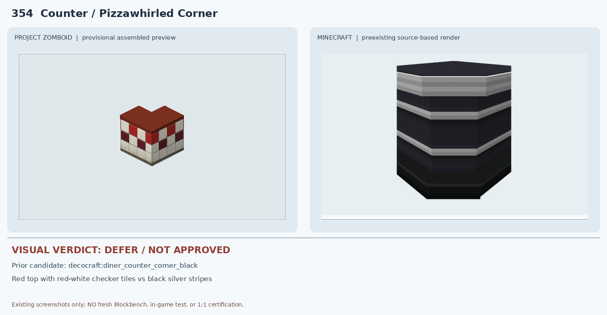
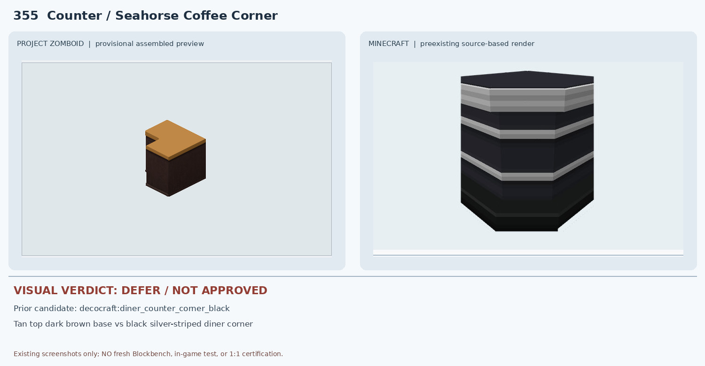
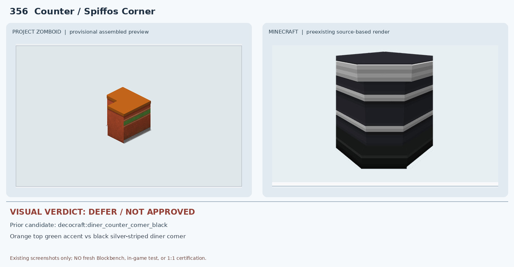
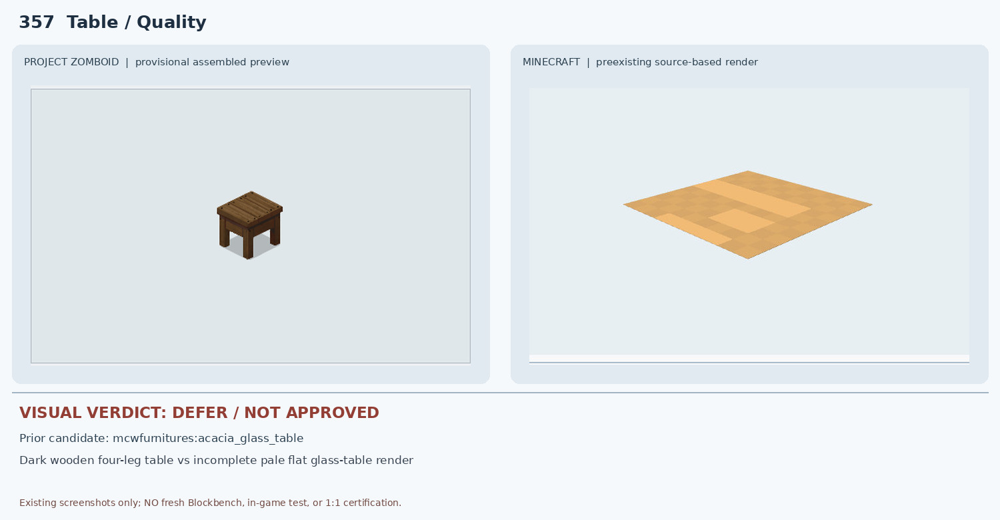

351 Chair / Dentist Patient — DEFER

PZ는 1×2 진료용 리클라이닝 체어와 발받침·금속 프레임이 일체화되어 있다. 기존 MC pfm:arm_chair_leather의 Blockbench 결과는 회색 평판처럼 보이는 부분 JSON 렌더라 팔걸이·발받침·기울기·1×2 형상을 검증할 수 없다. 용도도 일반 가죽 안락의자여서 승인 불가.
10 deferred. Prior source screenshots only; no new native render or in-game certification.

PZ는 1×2 진료용 리클라이닝 체어와 발받침·금속 프레임이 일체화되어 있다. 기존 MC pfm:arm_chair_leather의 Blockbench 결과는 회색 평판처럼 보이는 부분 JSON 렌더라 팔걸이·발받침·기울기·1×2 형상을 검증할 수 없다. 용도도 일반 가죽 안락의자여서 승인 불가.

PZ는 거친 갈색 목재 판재로 만든 L자 수제 코너이고, MC는 검정 본체와 은회색 가로띠가 두드러지는 식당 카운터다. 코너 실루엣만 비슷하며 색상·재질·판재 방향이 다르다.

PZ는 밝은 오크 상판과 진한 목재 세로 패널을 조합한 코너 바인데 MC는 검정 상판과 회색 수평 줄무늬가 있는 식당 카운터다. 상판 색·세로 나뭇결·L자 길이와 방향이 불일치한다.

PZ는 붉은 상판과 빨강·흰색 체크 타일 벽면이 특징인데 MC는 검정 본체와 회색 가로 띠다. 색상·체커보드 패턴·매장 정체성이 모두 다르다.

PZ는 밝은 황토색 상판과 어두운 갈색의 무늬 없는 목재 몸체로 구성되지만 MC는 검정 상판과 은회색 가로 줄무늬다. 상판 색상·하부 재질·띠 유무가 다르다.

PZ는 주황 상판·갈색 몸체·초록색 장식 띠가 핵심인데 MC는 검정 상판과 은회색 줄무늬다. 주황/초록 배색과 전면 패널 구조가 모두 불일치한다.

PZ는 짙은 갈색 원목 상판과 네 개의 굵은 다리가 있는 소형 목재 테이블이다. MC acacia_glass_table의 비교 이미지는 밝은 주황색 평판만 보이는 불완전한 부분 JSON 렌더이며 유리/다리 구조가 확인되지 않는다. 재질·색상·형상이 일치하지 않는다.